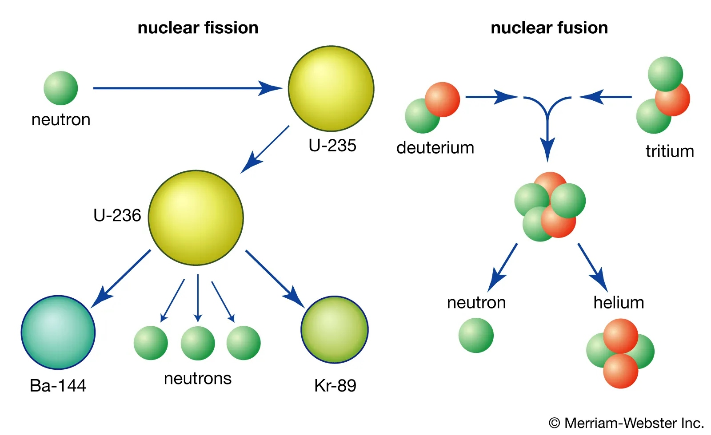
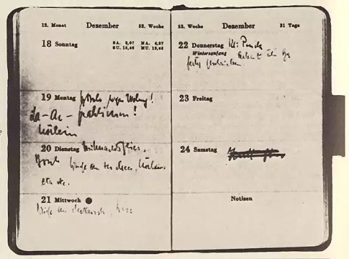
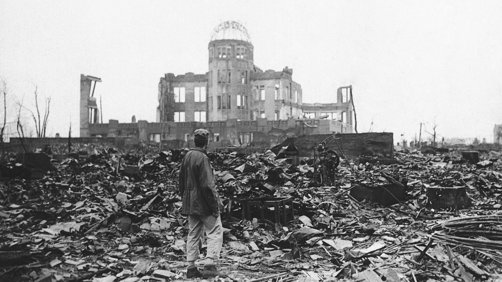
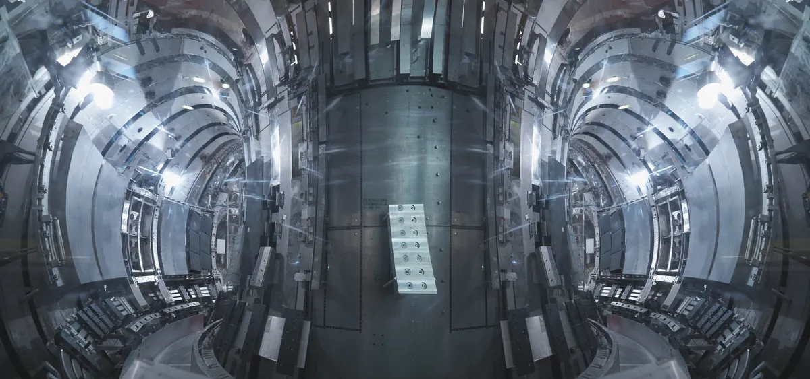

Nuclear Energy and Nuclear Weapons
The study of nuclear structure is an ongoing field that has been developing for over a hundred years. In the early 1900s, scientists were beginning to think about the atom's structure and radioactive decay. In 1911, Ernest Rutherford claimed that the atom has a small, dense mass enveloped by orbiting electrons. Modern experiments show that small and dense are great descriptors; the nucleus accounts for more than 99.9994% of the total atomic mass, but occupies less than one ten-trillionth of the atomic volume. By the 1930s, nuclear scientists were exploring the groundbreaking idea of splitting uranium atoms using neutrons.
Modern nuclear science is diverse, but one area of the field is developing models from current data that hold true for a broader range of atomic nuclei (models like magic numbers don't always hold up for very heavy nuclei). Another major goal is to accomplish the engineering feat that is sustainable nuclear fusion—this is a lot more complex than nuclear fission but could offer much more energy.

Hidden Figure: Lise Meitner
Lise Meitner was a Jewish Austrian who was the second woman to earn a PhD in Physics from the University of Vienna. She was the first woman to become a full physics professor in Germany, but lost her position due to the Nuremberg Laws in the 1930s. In December 1938, a group of scientists including Otto Hahn and Lise Meitner discovered resultant isotopes of Barium from neutron bombardment of Uranium. This was the first evidence of experimental evidence of nuclear fission.
Otto Hahn recieved the Nobel Prize in 1944, but despite being a long time collaborator on the project, Meitner did not. According to the Nobel Prize archive, she was nominated 19 times for the Nobel Prize in Chemistry between 1924 and 1948, and 30 times for the Nobel Prize in Physics between 1937 and 1967. Her many nominations are a testement to her substantial physics career even with so many barriers to being a Jewish woman in physics in that period.
Meitner did recieve other honors, though, including the posthumous naming of chemical element 109 meitnerium in 1997.

Otto Hahn's diary page recording the results of the uranium fission experiment.
Hidden Figure: Hadiyah-Nicole Green
Hadiyah-Nicole Green is a prominent American medical and nuclear physicist recognized for her innovative approach to cancer treatment using laser-activated nanoparticles. Among the 66 Black women who earned a Ph.D. in physics in the U.S. between 1973 and 2012, she stands out as the second Black woman and fourth Black individual to receive a doctoral degree in physics from The University of Alabama at Birmingham.
Lasting Effect of Nuclear Bombs:
The atomic bombs created during the Manhattan Project during World War II was created on the basis of the newly discovered nuclear fission. Oppenheimer assembled a group of the top scientists of the time to live and work at Los Alamos until the bomb had been completed. Less than three years after the laboratory’s founding, the world’s first nuclear weapons test, dubbed the Trinity test, took place in the nearby Jornada del Muerto desert on July 16, 1945. The test was successful in proving that the bomb worked, but it has had a lasting effect on around the world.
In Hiroshima, the "Little Boy" bomb instantly killed approximately 80,000 people and caused widespread destruction. Many more succumbed to injuries and radiation sickness in the days, weeks, and years that followed. Three days later, Nagasaki was devastated by the "Fat Man" bomb, claiming 39,000 lives and injuring thousands more.
Additionally, the Trinity test has caused harm to the Indigenous people living in the surrounding area. 12% of claims filed under the Radiation Exposure Compensation Act (RECA) belong to Navajo miners and their families suffering from a variety of radiation-related illnesses. Nuclear testing with fusion bombs in the 1950s has had similar environmental and humanitarian effects.

These events remain stark reminders of the consequences of atomic warfare and have shaped global attitudes towards nuclear power ever since. Public fear of nuclear energy is attributed to the dropping of atomic bombs during WW2 as well as disasters like Chernobyl and Fukushima. What would the world be like if we were in a time of peace when the power of nuclear fission and fusion were discovered? Would our energy infrastructure have already embraced the transition to fission energy? How much further along would fusion engineering be?
Fusion is 20 Years Away:
Fusion reactors have been just a couple decades away since the 1950s—current estimates continue to say fusion power plants will be feasible around 2050. What are the current hold ups?
There are two main processes being used to induce nuclear fusion on Earth. One is based on a process called inertial confinement, where you use lasers to heat up a target. In December 2022, the Department of Energy's National Ignition Facility (NIF) was able to break even in terms of energy investment vs. output using this method. The other approach is based on magnetic confinement, where powerful magnetic fields squeeze on a plasma until it begins fusing.
Despite being at the "break even" benchmark, current problems include turning this process into a power plant that can produce electrical energy, and getting more of the deuteron and triton fuel to fuse. Likely, each step of this process will present new and unexpected engineering and design challenges.

The inside of a tokamak fusion reactor. (Image credit: Monty Rakusen/Getty Images)Reflection:
Your personal reflection is an important component of your personal trajectory as a scientist. You will be graded only on completion, but please take the time to sincerely reflect on the following questions. I will use the collective responses to help me design better materials in the future.
- What are problems with the Nobel Prize as it stands? Is there a better method of honoring advancements in science?
- Do you believe nuclear weapons have a place in modern politics and warfare? What are the ethics of developing the science that may be used as a weapon?
- How will having fusion powerplants help our current energy/environmental crisis? What problems won't it fix?
- Will the "unlimited energy" of fusion reactors be shared around the world? How will this new source of energy be monetized and regulated?
Sources:
- https://en.wikipedia.org/wiki/Nuclear_fusion
- https://www.osti.gov/opennet/manhattan-project-history/Science/BombDesign/hydrogen-bomb.html#:~:text=While%20the%20atomic%20bombs%20built,was%20based%20upon%20nuclear%20fusion.
- https://www.mpic.de/4469988/die-entdeckung-der-kernspaltung#:~:text=Nuclear%20fission%20was%20discovered%20at,also%20created%20in%20the%20process.
- https://www.eia.gov/energyexplained/nuclear/
- https://www.space.com/when-will-we-achieve-fusion-power
- https://www.afhistory.af.mil/FAQs/Fact-Sheets/Article/458993/the-story-of-the-atomic-bomb/
- https://time.com/6296470/oppenheimer-navajo-uranium-mining-essay/
- https://understand-energy.stanford.edu/energy-resources/nuclear-energy/nuclear-fusion
- https://www.energy.gov/science/doe-explainsnuclei#:~:text=In%201911%2C%20Ernest%20Rutherford%20discovered,force%2C%20called%20the%20strong%20force.
- https://nuclearweaponarchive.org/Library/Teller.html